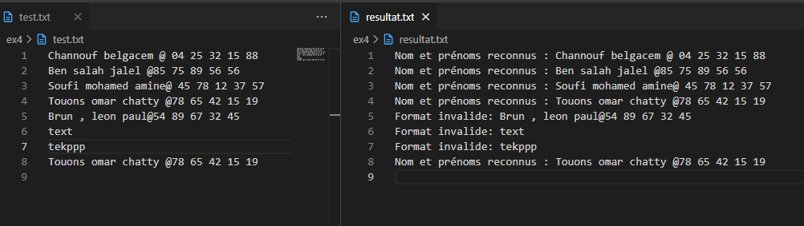
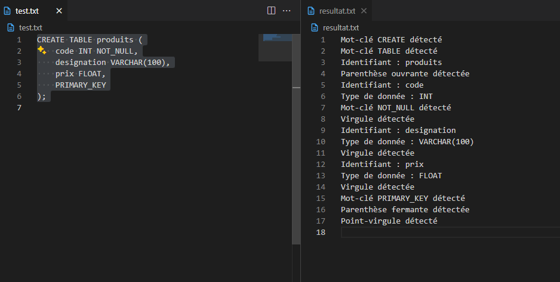
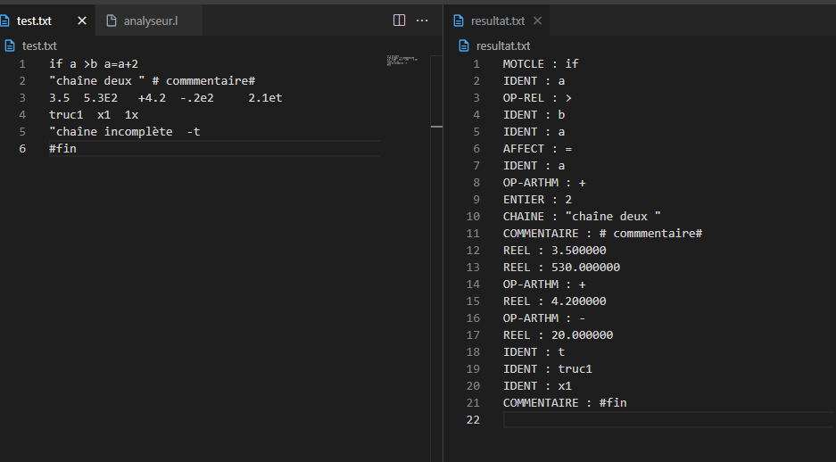
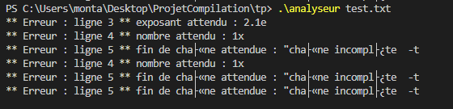

Introduction
Ce rapport présente les différents analyseurs lexicaux développés en Flex. Chaque exercice répond à un besoin spécifique d'analyse lexicale, allant de la validation de nombres binaires à l'analyse de requêtes SQL.
1. Validation de Nombres Binaires
Cet analyseur lexical permet de déterminer si une chaîne en entrée est un nombre binaire valide (composé uniquement de 0 et 1) ou non.
Code Source
%{
#include <stdio.h>
FILE *yyin;
%}
%option noyywrap
pairpair (aa|bb)*((ab|ba)(aa|bb)*(ab|ba)(aa|bb)*)*
%%
(0|1)* printf("(%s) -> est un nombre binaire", yytext);
.* printf("(%s) -> est n est pas un nombre binaire \n", yytext);
%%
int main(int argc, char *argv[])
{
++argv, --argc;
if (argc > 0)
yyin = fopen(argv[0], "r");
else
yyin = stdin;
// freopen("resultat.txt", "w", stdout); // Redirection supprimée pour affichage direct
yylex();
return 0;
}Exécution

Figure 1: Résultat de l'exécution du programme de validation de nombres binaires
Explication
L'analyseur utilise une expression régulière simple (0|1)* pour reconnaître les nombres binaires. Si la chaîne est composée uniquement de 0 et de 1, elle est considérée comme un nombre binaire valide. Sinon, elle est rejetée.
2. Analyse de Chaînes PairPair
Cet analyseur lexical identifie les chaînes qui contiennent un nombre pair de 'a' et un nombre pair de 'b'.
Code Source
%{
#include <stdio.h>
FILE *yyin;
%}
%option noyywrap
pairpair (aa|bb)*((ab|ba)(aa|bb)*(ab|ba)(aa|bb)*)*
%%
{pairpair} printf("(%s) -> nombre pair de a et de b \n", yytext);
a*b* printf("(%s) -> suite de a puis de b \n", yytext);
%%
int main(int argc, char *argv[])
{
++argv, --argc;
if (argc > 0)
yyin = fopen(argv[0], "r");
else
yyin = stdin;
freopen("resultat.txt", "w", stdout); // Redirection
yylex();
return 0;
}Exécution

Figure 2: Résultat de l'exécution du programme PairPair
Explication
L'analyseur utilise l'expression régulière (aa|bb)*((ab|ba)(aa|bb)*(ab|ba)(aa|bb)*)* pour identifier les chaînes qui contiennent un nombre pair de 'a' et un nombre pair de 'b'. Cette expression garantit que les caractères 'a' et 'b' apparaissent un nombre pair de fois dans la chaîne.
3. Analyseur Lexical de Comptage
Cet analyseur lexical permet de compter le nombre de mots, de lignes, de caractères et de calculer la somme des nombres présents dans un fichier texte.
Code Source
%{
#include <stdio.h>
#include <stdlib.h>
int nbMots = 0;
int nbLignes = 0;
int nbCaract = 0;
int somme = 0;
FILE *yyin;
%}
%option noyywrap
%%
[ \t]+ nbCaract += yyleng;
\n { nbLignes++; nbCaract++; }
[0-9]+ { nbMots++; nbCaract += yyleng; somme += atoi(yytext); }
[a-zA-Z]+ { nbMots++; nbCaract += yyleng; }
. nbCaract++;
%%
int main(int argc, char *argv[])
{
++argv; --argc;
if (argc > 0)
yyin = fopen(argv[0], "r");
else
yyin = stdin;
// 🔽 Redirection de sortie vers resultat.txt
freopen("resultat.txt", "w", stdout);
yylex();
printf("Nombre de mots : %d\n", nbMots);
printf("Nombre de lignes : %d\n", nbLignes);
printf("Nombre de caractères : %d\n", nbCaract);
printf("Somme des nombres : %d\n", somme);
return 0;
}Exécution

Figure 3: Résultat de l'exécution du programme Compteur
Explication
L'analyseur utilise différentes règles pour identifier les mots, les lignes et les caractères dans un fichier texte. Il compte également les nombres et calcule leur somme. Les résultats sont redirigés vers un fichier "resultat.txt".
- Les espaces et tabulations sont comptés comme des caractères
- Les retours à la ligne sont comptés comme des caractères et incrémentent le compteur de lignes
- Les nombres sont comptés comme des mots et leur valeur est ajoutée à la somme
- Les séquences de lettres sont comptées comme des mots
4. Analyseur de Répertoire Téléphonique
Cet analyseur lexical permet de reconnaître les entrées d'un répertoire téléphonique selon un format spécifique.
Code Source
%option noyywrap
%{
#include <stdio.h>
FILE *yyin;
%}
NOM [A-Z][a-zA-Z0-9]*
PRENOM [a-z]+
PRENOMS {PRENOM}([ ]+{PRENOM})*
SEP [ ]*@[ ]*
NUM [0-9]{2}
TEL {NUM}([ ]{1}{NUM}){4}
%%
{NOM}[ ]+{PRENOMS}{SEP}{TEL} {
printf("Nom et prénoms reconnus : %s\n", yytext);
}
.|\n ;
.* { printf("Format invalide: %s\n", yytext); }
%%
int main(int argc, char *argv[])
{
++argv, --argc;
if (argc > 0)
yyin = fopen(argv[0], "r");
else
yyin = stdin;
freopen("resultat.txt", "w", stdout); // Redirection
yylex();
return 0;
}Exécution

Figure 4: Résultat de l'exécution du programme Répertoire Téléphonique
Explication
L'analyseur reconnaît les entrées d'un répertoire téléphonique selon le format suivant :
- Le nom commence par une lettre majuscule et peut contenir des caractères alphanumériques
- Les prénoms sont écrits en minuscules et peuvent être multiples, séparés par des espaces
- Le séparateur entre le nom/prénom et le numéro de téléphone est le caractère '@'
- Le numéro de téléphone est composé de 5 paires de chiffres séparées par un espace
5. Analyseur de Requêtes SQL
Cet analyseur lexical permet d'analyser des requêtes SQL, en particulier les requêtes CREATE TABLE.
Code Source
%option noyywrap
%{
#include <stdio.h>
FILE *yyin;
%}
CREATE ([cC][rR][eE][aA][tT][eE])
TABLE ([tT][aA][bB][lL][eE])
PRIMARY_KEY ([pP][rR][iI][mM][aA][rR][yY][_][kK][eE][yY])
NOT_NULL ([nN][oO][tT][_][nN][uU][lL][lL])
ESPACE [ ]*
IDENTIFIER [a-zA-Z_][a-zA-Z0-9_]*
NUMBER [0-9]+
COMMA ,
SEMICOLON ;
LPAREN \(
RPAREN \)
DATATYPE ([iI][nN][tT]|[fF][lL][oO][aA][tT]|[dD][aA][tT][eE]|[vV][aA][rR][cC][hH][aA][rR]\([0-9]+\))
%%
{CREATE} { printf("Mot-clé CREATE détecté\n"); }
{TABLE} { printf("Mot-clé TABLE détecté\n"); }
{PRIMARY_KEY} { printf("Mot-clé PRIMARY_KEY détecté\n"); }
{NOT_NULL} { printf("Mot-clé NOT_NULL détecté\n"); }
{DATATYPE} { printf("Type de donnée : %s\n", yytext); }
{IDENTIFIER} { printf("Identifiant : %s\n", yytext); }
{NUMBER} { printf("Nombre : %s\n", yytext); }
{COMMA} { printf("Virgule détectée\n"); }
{SEMICOLON} { printf("Point-virgule détecté\n"); }
{LPAREN} { printf("Parenthèse ouvrante détectée\n"); }
{RPAREN} { printf("Parenthèse fermante détectée\n"); }
{ESPACE} ; /* Ignorer les espaces */
. { printf("Caractère non reconnu: %s\n", yytext); }
%%
int main(int argc, char *argv[])
{
++argv, --argc;
if (argc > 0)
yyin = fopen(argv[0], "r");
else
yyin = stdin;
freopen("resultat.txt", "w", stdout); // Redirection
yylex();
return 0;
}Exécution

Figure 5: Résultat de l'exécution du programme Analyseur SQL
Explication
L'analyseur reconnaît les différents éléments d'une requête SQL CREATE TABLE :
- Les mots-clés SQL (CREATE, TABLE, PRIMARY KEY, etc.) sont reconnus indépendamment de la casse
- Les types de données (INT, VARCHAR, DATE, etc.) sont identifiés
- Les identifiants, nombres et symboles de ponctuation sont reconnus
- Les espaces, tabulations et retours à la ligne sont ignorés
6. Analyseur Lexical Complet
Cet analyseur lexical complet permet d'identifier différents types de lexèmes (entiers, réels, identificateurs, opérateurs, etc.) et de détecter les erreurs lexicales.
Code Source
%option noyywrap
%{
#include <stdio.h>
#include <string.h>
int ligne = 1;
void erreur(const char* type, const char* texte) {
fprintf(stderr, "** Erreur : ligne %d ** %s : %s\n", ligne, type, texte);
}
%}
DIGIT [0-9]
LETTER [a-zA-Z_]
ID {LETTER}({LETTER}|{DIGIT})*
INT {DIGIT}+
EXP ([eE][+-]?{DIGIT}+)
REAL (({DIGIT}*"."{DIGIT}+)|({DIGIT}+"."{DIGIT}*)){EXP}?
STR \"([^\"\n]|\\\")*\"?
%%
[ \t\r]+ ; // Ignore espaces et tabulations
\n { ligne++; }
"#".* { printf("COMMENTAIRE : %s\n", yytext); }
"if"|"else"|"while" { printf("MOTCLE : %s\n", yytext); }
"<="|">="|"=="|"!="|"<"|">" { printf("OP-REL : %s\n", yytext); }
"=" { printf("AFFECT : %s\n", yytext); }
"+"|"-"|"*"|"/" { printf("OP-ARTHM : %s\n", yytext); }
{REAL} { printf("REEL : %f\n", atof(yytext)); }
{INT} { printf("ENTIER : %s\n", yytext); }
{ID} { printf("IDENT : %s\n", yytext); }
\"[^\"\n]*\n { erreur("fin de chaîne attendue", yytext); ligne++; }
{STR} {
if (yytext[strlen(yytext)-1] != '"') {
erreur("fin de chaîne attendue", yytext);
} else {
printf("CHAINE : %s\n", yytext);
}
}
\[^\\n]* { erreur("fin de chaîne attendue", yytext); }
[0-9]+\.[0-9]*[eE] { erreur("exposant attendu", yytext); }
[0-9]+[a-zA-Z_]+ { erreur("nombre attendu", yytext); }
. { erreur("caractère non reconnu", yytext); }
%%
int yyerror(char *s)
{
printf("Erreur : %s\n", s);
return 0;
}
int main()
{
yyparse();
return 0;
}Exécution

Figure 6: Résultat de l'exécution du programme Analyseur Lexical Complet

Figure 7: Détection d'erreurs par l'Analyseur Lexical
Explication
Cet analyseur lexical complet reconnaît différents types de lexèmes :
- ENTIER : constantes entières
- REEL : constantes réelles avec ou sans exposant
- IDENT : identificateurs de type C
- OP-ARTHM : opérateurs arithmétiques (+, -, *, /)
- OP-REL : opérateurs relationnels (<, >, <=, >=, ==, !=)
- AFFECT : opérateur d'affectation (=)
- MOTCLE : mots-clés (if, else, while)
- CHAINE : chaînes de caractères entre guillemets
- COMMENTAIRE : lignes commençant par #
Il détecte également les erreurs lexicales comme :
- Chaînes non terminées
- Nombres mal formés
- Identificateurs mal formés
- Caractères non reconnus
Conclusion
Les différents analyseurs lexicaux présentés dans ce rapport démontrent la puissance et la flexibilité de l'outil Flex pour l'analyse lexicale. Chaque analyseur a été conçu pour répondre à un besoin spécifique, allant de la simple validation de nombres binaires à l'analyse complexe de code avec détection d'erreurs.
Ces analyseurs peuvent être utilisés comme base pour développer des compilateurs, des interpréteurs ou des outils d'analyse de texte plus complexes.
Partie 2: Analyseurs Syntaxiques avec Bison
Cette partie présente l'utilisation combinée de Flex et Bison pour créer des analyseurs syntaxiques. Contrairement aux analyseurs lexicaux qui se concentrent uniquement sur la reconnaissance des lexèmes, les analyseurs syntaxiques permettent de vérifier la structure grammaticale d'un texte.
1. Analyseur d'Opérations Mathématiques
Cet exercice consiste à développer un analyseur syntaxique qui reconnaît des instructions de calcul de la forme "somme 1, 2, 3." ou "produit 2, 5." et qui calcule le résultat de ces opérations.
L'analyseur a été étendu pour prendre en charge également les opérations de soustraction et de division.
Fichier Bison (ex1.y)
%{
#include <stdio.h>
#include <stdlib.h>
int yylex(void);
int yyerror(char *s);
%}
%token FIN
%token SOM
%token PROD
%token NB
%token SOUS
%token DIV
%%
liste
: instructions FIN { printf("correct\n"); }
;
instructions
: instruction
| instruction instructions
;
instruction
: SOM listesom '.' { printf("Somme = %d\n", $2); }
| PROD listeprod '.' { printf("Produit = %d\n", $2); }
| SOUS listesous '.' { printf("Soustraction = %d\n", $2); }
| DIV listediv '.' { printf("Division = %d\n", $2); }
;
listesom
: NB { $$ = $1; }
| listesom ',' NB { $$ = $1 + $3; }
;
listeprod
: NB { $$ = $1; }
| listeprod ',' NB { $$ = $1 * $3; }
;
listesous
: NB { $$ = $1; }
| listesous ',' NB { $$ = $1 - $3; }
;
listediv
: NB { $$ = $1; }
| listediv ',' NB { if($3 != 0) $$ = $1 / $3; else { printf("Erreur: division par zéro\n"); exit(EXIT_FAILURE); } }
;
%%
int yyerror(char *s)
{
printf("Erreur : %s\n", s);
return 0;
}
int main()
{
yyparse();
return 0;
}Fichier Flex (ex1.l)
%{
#include <stdio.h>
#include <stdlib.h>
#include "ex1.tab.h"
%}
%option yylineno
%%
[0-9]+ { yylval = atoi(yytext); return NB; }
"somme" { return SOM; }
"produit" { return PROD; }
"soustraction" { return SOUS; }
"division" { return DIV; }
"," { return ','; }
"." { return '.'; }
"[$]" { return FIN; }
[ \t\n]+ { /* Ignorer les espaces et les retours à la ligne */ }
. { if(yytext[0] != EOF) printf("Caractère inconnu : %s\n", yytext); }
%%
int yywrap() {
return 1;
}Explication
Cet analyseur syntaxique permet de reconnaître et d'évaluer des expressions mathématiques simples de la forme :
somme 1, 2, 3.- Calcule la somme des nombresproduit 2, 5.- Calcule le produit des nombressoustraction 10, 2, 3.- Calcule la soustraction des nombresdivision 20, 2, 2.- Calcule la division des nombres
Le processus de compilation et d'exécution se déroule en plusieurs étapes :
- Compilation du fichier Bison avec l'option -d pour générer les fichiers .tab.c et .tab.h
- Compilation du fichier Flex pour générer le fichier lex.yy.c
- Compilation finale pour obtenir l'exécutable
L'analyseur affiche le résultat de chaque opération et vérifie la syntaxe des expressions.
2. Analyseur de Requêtes SQL
Cet exercice complète le travail du TP1 (analyseur lexical SQL) en ajoutant un analyseur syntaxique qui permet de vérifier la syntaxe des requêtes SQL de type CREATE TABLE.
Fichier Bison (ex2.y)
%{
#include <stdio.h>
#include <stdlib.h>
#include <string.h>
void yyerror(char *s);
extern int yylex();
extern int yyparse();
extern FILE *yyin;
%}
%union {
char* str;
int num;
}
%token CREATE TABLE VARCHAR
%token <str> IDENTIFIER
%token <num> NUMBER
%token COMMA LPAREN RPAREN
%start requete
%%
requete:
CREATE TABLE IDENTIFIER LPAREN champs RPAREN
{ printf("Syntaxe correcte : CREATE TABLE.\n"); YYACCEPT; }
;
champs:
champ
| champs COMMA champ
;
champ:
IDENTIFIER VARCHAR LPAREN NUMBER RPAREN
{ /* champ de type varchar */ }
;
%%
void yyerror(char *s) {
fprintf(stderr, "Erreur syntaxique: %s\n", s);
// Retourner 1 pour signaler l'échec
}Fichier Flex (ex2.l)
%option noyywrap
%{
#include <stdio.h>
#include "ex2.tab.h" // Inclusion du header généré par Bison
FILE *yyin;
%}
CREATE ([cC][rR][eE][aA][tT][eE])
TABLE ([tT][aA][bB][lL][eE])
IDENTIFIER [a-zA-Z_][a-zA-Z0-9_]*
NUMBER [0-9]+
COMMA ,
LPAREN \(
RPAREN \)
VARCHAR ([vV][aA][rR][cC][hH][aA][rR])
ESPACE [ ]*
%%
{CREATE} { return CREATE; }
{TABLE} { return TABLE; }
{VARCHAR} { return VARCHAR; }
{IDENTIFIER} { yylval.str = strdup(yytext); return IDENTIFIER; }
{NUMBER} { yylval.num = atoi(yytext); return NUMBER; }
{COMMA} { return COMMA; }
{LPAREN} { return LPAREN; }
{RPAREN} { return RPAREN; }
{ESPACE} ; /* Ignorer les espaces */
. { return yytext[0]; }
%%
int main(int argc, char *argv[])
{
++argv, --argc;
if (argc > 0)
yyin = fopen(argv[0], "r");
else
yyin = stdin;
freopen("resultat.txt", "w", stdout); // Redirection
yyparse();
return 0;
}Explication
Cet analyseur syntaxique permet de vérifier la syntaxe des requêtes SQL de type CREATE TABLE. Il reconnaît la structure suivante :
CREATE TABLE utilisateur(nom varchar(100), prenom varchar(100), ville varchar(255))L'analyseur vérifie que :
- La requête commence par les mots-clés CREATE TABLE
- Le nom de la table est un identifiant valide
- Les champs sont définis entre parenthèses
- Chaque champ a un nom et un type (actuellement, seul le type VARCHAR est supporté)
- Les champs sont séparés par des virgules
L'analyseur utilise les fonctions et variables spécifiques à Bison :
YYACCEPT: pour indiquer que l'analyse s'est terminée avec succèsyyerror: pour gérer les erreurs syntaxiques%union: pour définir les types de données des tokens%start: pour définir le symbole de départ de la grammaire
Conclusion Générale
Ce projet a permis d'explorer les outils Flex et Bison pour l'analyse lexicale et syntaxique. Ces outils sont complémentaires :
- Flex se concentre sur l'analyse lexicale, c'est-à-dire la reconnaissance des lexèmes (mots, nombres, symboles, etc.) dans un texte.
- Bison se concentre sur l'analyse syntaxique, c'est-à-dire la vérification de la structure grammaticale d'un texte à partir des lexèmes reconnus par Flex.
La combinaison de ces deux outils permet de créer des analyseurs complets pour diverses applications : langages de programmation, formats de données, langages de requête, etc.
Partie 3: Mini-Projet de Compilation
Cette partie présente un mini-projet de compilation qui utilise Flex et Bison pour créer un compilateur pour un langage de programmation simple utilisant des mots-clés en dialecte tunisien.
Compilateur pour un Langage en Dialecte Tunisien
Ce mini-projet consiste en un compilateur qui traduit un langage de programmation simple utilisant des mots-clés en dialecte tunisien vers du code C standard. Le compilateur est implémenté à l'aide de Flex pour l'analyse lexicale et Bison pour l'analyse syntaxique.
Le langage prend en charge les fonctionnalités suivantes :
- Déclaration et assignation de variables
- Opérations arithmétiques
- Structures conditionnelles (if/else)
- Boucles (while)
- Affichage de valeurs
Mots-clés du Langage
| Mot Tunisien | Signification | Équivalent en C |
|---|---|---|
| a3tin | let (déclarer une variable) | int variable = valeur; |
| idha | if (condition) | if (condition) |
| wala | else | else |
| madam | while (boucle) | while (condition) |
| atba3 | print (afficher) | printf("%d\n", valeur); |
Exemple de Code Source
a3tin a = 5;
a3tin b = 10;
a3tin f = 1;
a3tin sum = a + b * 2;
idha (sum > 20) {
atba3 sum;
} wala {
atba3 a;
}
a3tin i = 0;
madam (i < 3) {
atba3 i;
i = i + 1;
}Code C Généré
#include <stdio.h>
int main() {
int a = 5;
int b = 10;
int f = 1;
int sum = a + b * 2;
if (sum > 20) {
printf("%d\n", sum);
}
else {
printf("%d\n", a);
}
int i = 0;
while (i < 3) {
printf("%d\n", i);
i = i + 1;
}
return 0; }Architecture du Compilateur
1. Analyseur Lexical (compiler.l)
%{
#include <stdio.h>
#include <stdlib.h>
#include "compiler.tab.h"
%}
%option yylineno
%%
[0-9]+ { yylval = atoi(yytext); return NB; }
"a3tin" { return LET; }
"idha" { return IF; }
"wala" { return ELSE; }
"madam" { return WHILE; }
"atba3" { return PRINT; }
"," { return ','; }
"." { return '.'; }
"[$]" { return FIN; }
[ \t\n]+ { /* Ignorer les espaces et les retours à la ligne */ }
. { if(yytext[0] != EOF) printf("Caractère inconnu : %s\n", yytext); }
%%
int yywrap() {
return 1;
}2. Analyseur Syntaxique (compiler.y)
%{
#include <stdio.h>
#include <stdlib.h>
#include <string.h>
#include <stdbool.h>
FILE *out;
void yyerror(const char *s);
int yylex();
extern int yylineno;
extern FILE *yyin;
#define MAX_VARS 100
char* variables[MAX_VARS];
int var_count = 0;
bool is_variable_declared(const char* name) {
for(int i = 0; i < var_count; i++) {
if(strcmp(variables[i], name) == 0) {
return true;
}
}
return false;
}
void declare_variable(const char* name) {
if(var_count >= MAX_VARS) {
yyerror("Too many variables");
return;
}
if(!is_variable_declared(name)) {
variables[var_count] = strdup(name);
var_count++;
}
}
// Helper to concat strings
char* strconcat3(const char* a, const char* b, const char* c) {
size_t len = strlen(a) + strlen(b) + strlen(c) + 1;
char* res = malloc(len);
strcpy(res, a);
strcat(res, b);
strcat(res, c);
return res;
}
char* strconcat4(const char* a, const char* b, const char* c, const char* d) {
size_t len = strlen(a) + strlen(b) + strlen(c) + strlen(d) + 1;
char* res = malloc(len);
strcpy(res, a);
strcat(res, b);
strcat(res, c);
strcat(res, d);
return res;
}
%}
%union {
int ival;
char* sval;
}
%token <ival> NUMBER
%token <sval> IDENTIFIER
%token LET IF ELSE WHILE PRINT
%token SEMICOLON ASSIGN PLUS MINUS MUL DIV
%token LPAREN RPAREN LBRACE RBRACE
%token GE LE GT LT EQ NEQ
/* Définition de la précédence et de l'associativité des opérateurs */
%left EQ NEQ
%left GT LT GE LE
%left PLUS MINUS
%left MUL DIV
%type <sval> expr stmt stmts block else_block
%%
program:
stmts { fprintf(out, "#include <stdio.h>\nint main() {\n%sreturn 0; }\n", $1); free($1); }
;
stmts:
/* empty */ { $$ = strdup(""); }
| stmts stmt { $$ = strconcat3($1, $2, ""); free($1); free($2); }
;
stmt:
LET IDENTIFIER ASSIGN expr SEMICOLON {
declare_variable($2);
$$ = strconcat4("int ", $2, " = ", $4);
char* tmp = strconcat3($$, ";\n", "");
free($$);
$$ = tmp;
free($2);
free($4);
}
| IDENTIFIER ASSIGN expr SEMICOLON {
if(!is_variable_declared($1)) {
char msg[100];
snprintf(msg, sizeof(msg), "Line %d: Variable '%s' not declared", yylineno, $1);
yyerror(msg);
}
$$ = strconcat4($1, " = ", $3, ";\n");
free($1);
free($3);
}
| PRINT expr SEMICOLON { $$ = strconcat3("printf(\"%d\\n\", ", $2, ");\n"); free($2); }
| IF LPAREN expr RPAREN block else_block { $$ = strconcat4("if (", $3, ") ", $5); char* tmp = strconcat3($$, $6, ""); free($$); $$ = tmp; free($3); free($5); free($6); }
| WHILE LPAREN expr RPAREN block { $$ = strconcat4("while (", $3, ") ", $5); free($3); free($5); }
;
else_block:
ELSE block { $$ = strconcat3("else ", $2, ""); free($2); }
| /* empty */ { $$ = strdup(""); }
;
block:
LBRACE stmts RBRACE { $$ = strconcat3("{\n", $2, "}\n"); free($2); }
;
expr:
NUMBER { char buf[32]; snprintf(buf, sizeof(buf), "%d", $1); $$ = strdup(buf); }
| IDENTIFIER {
if(!is_variable_declared($1)) {
char msg[100];
snprintf(msg, sizeof(msg), "Line %d: Variable '%s' not declared", yylineno, $1);
yyerror(msg);
}
$$ = strdup($1);
free($1);
}
| expr PLUS expr { $$ = strconcat3($1, " + ", $3); free($1); free($3); }
| expr MINUS expr { $$ = strconcat3($1, " - ", $3); free($1); free($3); }
| expr MUL expr { $$ = strconcat3($1, " * ", $3); free($1); free($3); }
| expr DIV expr { $$ = strconcat3($1, " / ", $3); free($1); free($3); }
| expr GT expr { $$ = strconcat3($1, " > ", $3); free($1); free($3); }
| expr LT expr { $$ = strconcat3($1, " < ", $3); free($1); free($3); }
| expr GE expr { $$ = strconcat3($1, " >= ", $3); free($1); free($3); }
| expr LE expr { $$ = strconcat3($1, " <= ", $3); free($1); free($3); }
| expr EQ expr { $$ = strconcat3($1, " == ", $3); free($1); free($3); }
| expr NEQ expr { $$ = strconcat3($1, " != ", $3); free($1); free($3); }
| LPAREN expr RPAREN { $$ = strconcat3("(", $2, ")"); free($2); }
;Fonctionnement du Compilateur
Le compilateur fonctionne en plusieurs étapes :
- Analyse lexicale : Le fichier compiler.l définit les règles pour reconnaître les tokens du langage (mots-clés, identifiants, nombres, opérateurs, etc.).
- Analyse syntaxique : Le fichier compiler.y définit la grammaire du langage et les actions à effectuer pour générer le code C correspondant.
- Génération de code : Pendant l'analyse syntaxique, le compilateur génère le code C équivalent pour chaque construction du langage source.
- Vérification sémantique : Le compilateur vérifie que les variables sont déclarées avant d'être utilisées et signale les erreurs.
Caractéristiques importantes :
- Gestion des variables : Le compilateur maintient une table des symboles pour suivre les variables déclarées.
- Vérification des erreurs : Le compilateur détecte et signale les erreurs lexicales, syntaxiques et sémantiques.
- Précédence des opérateurs : Les règles de précédence sont définies pour les opérateurs arithmétiques et de comparaison.
- Structures de contrôle : Le compilateur prend en charge les structures conditionnelles (if/else) et les boucles (while).
Utilisation du compilateur :
- Compiler les fichiers source avec Flex et Bison :
- Exécuter le compilateur sur un fichier source :
- Compiler et exécuter le code C généré :
flex compiler.l
bison -d compiler.y
gcc compiler.tab.c lex.yy.c -o compiler./compiler input.txtgcc output.c -o program
./programExemple d'exécution :
Pour le code source donné en exemple, l'exécution du programme généré produira la sortie suivante :
5
0
1
2Cette sortie correspond à :
- La valeur de 'a' (5) est affichée car sum (25) est supérieur à 20
- Les valeurs 0, 1 et 2 sont affichées par la boucle while
Conclusion Finale
Ce projet a permis d'explorer différentes applications des outils Flex et Bison pour l'analyse lexicale et syntaxique :
- Analyseurs lexicaux simples pour diverses applications
- Analyseurs syntaxiques pour des langages spécifiques
- Compilateur complet pour un langage de programmation personnalisé
Ces outils offrent une grande flexibilité pour développer des analyseurs et des compilateurs pour différents types de langages et de formats de données. La combinaison de Flex pour l'analyse lexicale et de Bison pour l'analyse syntaxique permet de créer des solutions complètes pour le traitement de langages.